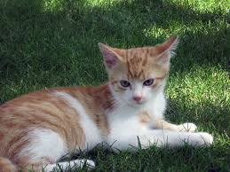
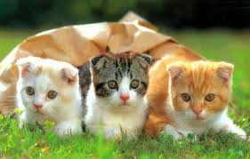

Mèo, chính xác hơn là mèo nhà để phân biệt với các loài trong họ Mèo khác, là động vật có vú nhỏ và ăn thịt, sống chung với loài người, được nuôi để săn vật gây hại hoặc làm thú nuôi. Người ta tin rằng tổ tiên trung gian gần nhất trước khi được thuần hóa của chúng là mèo rừng châu Phi (Felis silvestris lybica). Mèo nhà đã sống gần gũi với loài người ít nhất 9.500 năm, và hiện nay chúng là con vật cưng phổ biến nhất trên thế giới.
Mèo giao tiếp bằng cách kêu meo, gừ-gừ, rít, gầm gừ và ngôn ngữ cơ thể. Mèo trong các bầy đàn sử dụng cả âm thanh lẫn ngôn ngữ cơ thể để giao tiếp với nhau.
Giống như một số động vật đã thuần hóa khác (như ngựa), mèo vẫn có thể sống tốt trong môi trường hoang dã như mèo hoang. Trái với quan niệm thông thường của mọi người rằng mèo là loài động vật cô độc, chúng thường tạo nên các đàn nhỏ trong môi trường hoang dã.
